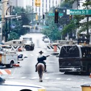
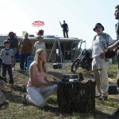
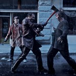
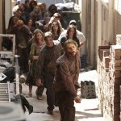
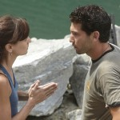
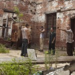

A primeira temporada de The Walking Dead estreou em 31 de outubro de 2010 na AMC e foi concluída em 5 de dezembro de 2010 com 6 episódios no total. A série televisiva é baseada na série de quadrinhos de mesmo nome, produzida por Robert Kirkman, Tony Moore e Charlie Adlard. Foi adaptada para a televisão por Frank Darabont, que foi roteirista e co-roteirista de quatro dos seis episódios da temporada e dirigiu o piloto, “Days Gone Bye” (Dias Passados). A temporada também foi produzida por Gale Anne Hurd, conhecida por seus trabalhos em “O Exterminador do Futuro”, “Aliens” e “Hulk”.
The Walking Dead já bateu diversos recordes de audiência nos Estados Unidos e foi finalista em várias categorias no 68º Golden Globe Awards, incluindo a de Melhor Série Dramática de TV. Assustadoramente o mundo vive momentos de caos, quando o xerife Rick Grimes acorda, depois de passar muito tempo em coma num hospital. Mal sabe ele que nada mais é como costumava ser, o improvável aconteceu e o apocalipse chegou com uma assustadora invasão de mortos-vivos. The Walking Dead conta exatamente o que aconteceu com os humanos que sobreviveram a esse apocalipse zumbi e prosseguem lutando contra essas perigosas criaturas.
Ferido na linha de fogo, o assistente do xerife de King County, Rick Grimes, acorda de um coma para descobrir um mundo infestado por zumbis. Sozinho e desorientado, ele sai em busca de sua esposa e de seu filho.
Rick rapidamente encontra dois outros sobreviventes, Morgan Jonas e seu filho, Duane. Morgan explica que os mortos estão devorando os vivos. “Uma coisa que eu sei: não seja mordido”, diz Morgan. As mordidas matam, você se torna um deles. Morgan viu a transformação em primeira mão. Sua esposa, Jenny, foi mordida e se transformou em um “walker”. Agora, ela assombra ele e seu filho ao retornar, frequentemente, para a casa onde morreu.Rick leva Morgan e Duane ao Departamento do Xerife de King County, onde eles estocam armas e munição. Rick se dirige para Atlanta onde, supostamente, foi formado um centro de refugiados e o CDC está trabalhando para encontrar uma cura. Com um rifle, Rick dá a Morgan um walkie-talkie com instruções para checá-lo todos os dias ao amanhecer, para que eles possam se encontrar futuramente. A caminho de Atlanta, Rick fica sem gasolina perto de uma fazenda, na qual encontra um cavalo que usa durante o resto do caminho.
Enquanto isso, Lori e Carl estão vivendo fora de Atlanta, em um acampamento com Shane Walsh, o melhor amigo de Rick desde o ensino médio e seu parceiro de trabalho, junto com outros sobreviventes, incluindo Amy, Dale Horvath, Jim, e as famílias Morales e Peletier. Como acreditava que Rick estava morto, Lori iniciara uma relação romântica com Shane, que se tornara, de fato, o líder do grupo.
Em uma Atlanta deserta, Rick é subjugado por uma horda de walkers que atacam seu cavalo e o forçam a se abrigar dentro de um tanque. Guiado por Glenn, um jovem aventureiro que o instrui via rádio a fugir, Rick pega uma arma e uma granada e foge por sua vida. Glenn conduz Rick a uma loja de departamentos, onde eles conhecem outros sobreviventes: Andrea, Morales, Jacqui, T-Dog e Merle Dixon, um ex-vigarista que facilmente se irrita.
Rick algema o volátil Merle no terraço de uma loja após Merle atacar T-Dog. Rick então formula um plano de fuga, que envolve ele e Glenn se cobrirem com as vísceras de walkers como camuflagem. Tendo caminhado no meio de uma multidão de walkers, Rick usa um furgão para evacuar os sobreviventes, enquanto Glenn engana os mortos com o som de um alarme de carro em uma ligação direta num Dodge Challenger.
De volta ao terraço, T-Dog acidentalmente deixa cair as chaves das algemas dentro dos tubos de ventilação, e então fecha a porta de acesso, para que um Merle preso e furioso, esteja relativamente a salvo dos walkers.
Dirigindo de volta para o acampamento, Morales adverte Rick sobre o irmão de Merle, Daryl, que ficará furioso quando souber que eles abandonaram Merle no terraço. Glenn chega ao acampamento primeiro, e Shane e Dale o castigam por ele atrair os walkers com o alarme. Jim desconecta o alarme conforme o furgão se aproxima.
Andrea se reúne, emocionada, com Amy, sua irmã mais nova, assim como Morales e sua família. Rick, então, sai do furgão e fica em choque ao descobrir que Lori e Carl estão vivendo no acampamento. A família se reúne, emocionada. Mais tarde, ao redor da fogueira, Lori diz a Rick que disseram a ela que ele seria levado para Atlanta, mas isso nunca aconteceu. “A mamãe disse que você tinha morrido”, Carl afirma. “Ela tinha todos os motivos para acreditar nisso.”, Rick responde antes de agradecer Shane por tê-los salvado.
Naquela noite, Rick e Lori fazem sexo em sua tenda, fazendo votos um para o outro de que esse era um novo começo em seu casamento. Na manhã seguinte, Rick e os outros encontram um walker se banqueteando com um veado recém-caçado na floresta. Jim supõe que os mortos estão ficando sem comida na cidade.
Daryl retorna da caçada que tinha feito na noite passada. Após ser informado sobre o paradeiro de seu irmão, Daryl ataca Rick e Shane rapidamente o contém. Daryl jura buscar seu irmão mais velho, horrorizado com a ideia de terem deixado Merle preso e incapaz de se alimentar. “Vou voltar”, Rick se apresenta como voluntário. Glenn e T-Dog também se oferecem.
“Você está colocando cada um de nós em risco”, Shane responde, argumentando que eles precisam da maior quantidade possível de pessoas para proteger o acampamento. Rick atesta que eles realmente precisam das armas que deixaram cair quando foram atacados. Lori discorda, mas Rick diz que ele precisa recuperar o walkie-talkie, caso contrário Morgan e Duane vão cair na mesma armadilha em que ele caiu.
Depois que Rick parte, Lori manda Shane se afastar de sua família. “Foi você quem me disse que ele tinha morrido”, Lori diz. Perto dali, uma discussão se inicia entre Ed Peletir e Carol, sua esposa delicada. Após Ed dar um tapa em Carol, Shane intervém e o agride brutalmente.
Em Atlanta, Rick e o grupo vão para o mesmo lugar onde deixaram Merle. Ao chegarem à porta diante da qual tinham feito uma barricada, eles veem que as correntes foram quebradas e encontram o terraço vazio, exceto por uma mão cortada, ensanguentada, ao lado de uma serra.O grupo de Atlanta segue a trilha de sangue de Merle pelas ruas, mas decide recuperar as armas de Rick antes de continuar a busca. Glenn vai atrás das armas enquanto os demais se posicionam em guarda. O plano deles é interrompido quando Daryl é atacado por dois homens, que acabam levando Glenn como refém a uma fortaleza no interior da cidade, que na realidade é um asilo para idosos. Glenn é libertado e Rick cede algumas armas para o grupo do asilo, para que possam se proteger. Rick, Glenn, T-Dog e Daryl posteriormente descobrem que o veículo deles sumiu. “Merle”, diz Rick. “Ele vai querer se vingar do pessoal do acampamento”, prevê Daryl.
De volta ao acampamento, Andrea e Amy apresentam aos sobreviventes o peixe fisgado em um lago próximo. Dale interrompe a empolgação ao demonstrar preocupação com Jim, que vem cavando buracos, de forma fervorosa, sem explicação. Shane subjuga Jim, que não consegue se lembrar exatamente por que ele estava cavando: “Eu tinha um motivo, mas não lembro”, ele diz. “Algo com o que sonhei na noite passada”.
Enquanto isso, Andrea percorre o trailer de Dale à procura de algo para embrulhar o presente de aniversário de Amy: um colar de sereia que ela roubou da loja de departamentos. Mais tarde, o grupo se empanturra de peixe ao redor de uma fogueira e o humor fica bem mais leve. Quando Amy se afasta para ir ao banheiro do trailer, ela é mordida no braço por um errante – um dos vários prestes a atacar o acampamento. Rick e seu grupo chegam para deter os errantes, com sucesso, apesar de ele ter chegado tarde demais para salvar Amy e Ed. Jim também é mordido durante o ataque.
Os sobreviventes queimam os corpos dos errantes, mas Glenn insiste que eles enterrem os seus mortos. Andrea mantem Amy próxima a si, não permitindo que ninguém se aproxime do corpo. Dale mostra compaixão, ao explicar que, desde a morte de sua esposa, “você e sua irmã foram as únicas pessoas com as quais realmente me importei”. Andrea diz a Dale que sente-se culpada por ter perdido tantos aniversários de Amy. “Me desculpe por não ter estado sempre presente”, Andrea choraminga de joelhos, próxima a uma Amy agora reanimada. Ela diz a Amy que está presente naquele momento e que a ama, e então a detem com um tiro na cabeça.
Quando a ferida de Jim é revelada e a doença associada à infecção piora, Rick sugere que o grupo viaje ao CDC para buscar ajuda. Shane acredita que a base militar de Fort Benning é mais segura, mas está a 200km de distância. Enquanto vasculham a floresta, buscando por errantes, Shane tenta convencer Rick a mudar de ideia. “Preciso fazer o melhor para a minha família”, diz Rick. “Se fosse a sua família, você pensaria diferente”. Furioso, Shane aponta sua arma em direção a Rick (sem que o mesmo perceba), mas não puxa o gatilho. Ainda que Rick não tenha percebido as ações de Shane após a discussão, Dale assiste todo o espetáculo e murmura: “Jesus”.
Posteriormente, Shane anuncia seu apoio ao plano de Rick. Morales diz que sua família não se juntará ao grupo e eles partem em outra direção. Rumo ao CDC, o trailer apresenta um defeito. Jim, agonizando, pede a Rick para ser deixado para trás. “Quero encontrar com a minha família”, ele diz, referindo-se a seus falecidos filhos e esposa. O grupo reluta, mas o deixa encostado em uma árvore.
Em um laboratório do CDC, um desgrenhado cientista Dr. Edwin Jenner realiza experiências em uma amostra denominada “TS-19″. Ele então acidentalmente derrama um líquido corrosivo, o que inicia um processo de descontaminação que destrói as amostras. Enquanto isso, a caravana de Rick se aproxima do CDC. Jenner observa a chegada do grupo por uma câmera de segurança.
Jenner concorda em permitir a entrada dos sobreviventes ao prédio, desde que eles se submetam a testes de sangue. O grupo então festeja com comida e vinho e, posteriormente, toma banhos em chuveiros elétricos. Mais tarde, Andrea lamenta o fim da civilização, enquanto Dale tenta confortá-la.
Horas depois, Shane, embriagado, confronta Lori, confessando seu amor e insistindo que ele não mentiu a respeito de Rick estar morto. Bêbado e descontrolado, Shane agarra Lori à força e ela arranha seu rosto e pescoço na tentativa de detê-lo. Horrorizado por seu próprio comportamento, ele sai e a deixa, trêmula e assustada.
Na manhã seguinte, Jenner mostra ao grupo imagens aumentadas do cérebro da cobaia “TS-19″, sua esposa, que permitiu que sua infecção fosse registrada. Ele admite que não sabe o que é a doença ou como tratá-la. Além disso, ele perdeu contato com os outros laboratórios. Para piorar, os geradores do CDC estão ficando sem combustível. Quando eles se esvaziarem, o prédio se auto-destruirá, de acordo com o protocolo de descontaminação.
Apesar de tentar convencê-los a ficar no prédio, Jenner acaba concordando em deixar Rick e os demais partirem quando a auto-destruição é ativada. Jacqui, com medo de ter o mesmo fim de Amy ou Jim, opta por ficar para trás. Após uma grande explosão, Rick e os sobreviventes partem em caravana para longe dos destroços em chamas, sem destino. Aparentemente em direção a Fort Benning.
|  |  |  |  |
|  |  |
Abaixo você encontra as comparações de cada episódio da primeira temporada com os acontecimentos dos quadrinhos de The Walking Dead.
A primeira temporada obteve uma aclamação quase universal e teve 5.35 milhões de telespectadores na sua estreia. O último episódio foi assistido por seis milhões de pessoas e, entre as idades dos 18 aos 49 anos, tornou-se a série de drama mais vista da história da TV fechada. Confira a audiência por episódios: